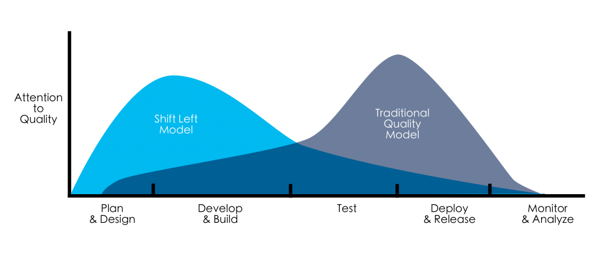

I have created this HelloWorld page in order to develop a portfolio describing and documenting my achievements within the placement so far in addition to functioninig as a visible indicator of the incremental development of my coding skills.
Development Research
I initially partook in a one-on-one meeting with my manager, Steven Beech, who spent some time outlining the basic principles, functions and structure on software development and this framework formed the basis of my research from thereonin. I looked into a variety of areas within the industry and subsequently presented my findings back to him. The substance of my research was then formulated into a presentation to be used as a reference point for my placement going forward and as an introduction to the department for future graduates. My areas of focus are outlined below.
Methodologies and Approaches to Software Development
Primarily I focussed on the overarching methodologies and approached to working within development, their differences, benefits, drawbacks, function and impact on development as a whole. This mainly consisted of differences between the rigidity of waterfall and the fluidity and adaptability of agile and how each of them are utilised within the industry. Furthermore, I looked into the emergence of the Shift Left culture and its uses, in addition to querying what aspects of each approach could be incorporated to achieve the ideal way of working for a particular project.
Shift Left Method

Quality in Software Development
I proceeded to look into what attributes and functions and contributors towards quality within a development project and how to define the term holistically. I looked into the subsections within the term which can be used as quality measurements (reliabiltiy, adequacy, maintainability etc.) and how they can be defined.
Quality Attributes
Different Roles Within Development
I also looked into the different roles available within the industry, the purpose of their role, and how they all work together to create an efficent, successful and thoroughly agile workforce. I now have developed a clear and precise notion of each role and their duties, responsibilities and what they bring to DevOps as a whole.
Software Distribution Models & Functions
I subsequently researched the various forms of software distribution models and functions, and the variety of purposes and requirements they are each capable of fulfilling. These included SaaS, COTS and Bespoke applications. I looked into the pros and cons of each, in addition to which type of projects suit each distribution model.
Integration & Automation
I then proceeded to look into the processes of automation and integration within DevOps and the vast impact they can have if utilised in the correct and suitable manner. I looked at what constitutes integration and the various implementation techniques (star, EBS, vertical and the implementation of the common data format). Additionally I looked into characteristics of automation and the various benefits it can provide.
Configuration Management
I researched both the concept of configuration management on a general level and its application within different workplaces in addition to a more detailed and nuanced look into its function and implementation in development specifically. This essentially consisted of learning the general principles of the process (identification, control, status accounting, audits etc.) and the variety of benefits adopting this working philosophy can provide.
Programming Languages and Paradigms
I initially looked into the different types of lanaguages that coding consists of and the philosophies behind them (procedural, object-oriented etc.) I proceeded to outline the main languages within the industry (Javascript, Python, C etc.), their techniques, quirks, functions and what time of project/product they lend themselves to. As an overarching theme to this area, I also considered the historical transition within Devops from 'human-computer' communication to a more predominant focus on 'human-human' communication, a notion that underpinned this facet of my research.
GitHub
GitHub Research
Before attempting anything practical with regards to GitHub, I firstly familiarised myself with the concept and function of the platform and its modern day uses within development. Furthermore, I gained a foudnational understanding of basic Git structure, languages and commands in order to implement that into my work. I ascertained the reasons as to why it is such a prevalent system and why it is preferable to alternative version control systems.
Gitflow
After assimilating myself with the basic concept and notion of Git and its functions, I proceeded to look into Gitflow, a specific structure/process which is comminly utilised within the industry. I looked at the specifics of differentiation between branches and the functions of each. I initially looked at both master and develop branches and how they interact and work with one another, and the proceeded to research numerous additional branches such a release, hotfix and feature branches.
Practical Experience with Git
Having acquired a basic, foundational knowledge of Git I attempted to gain some practical and hands-on experience in order to see the visual and physical results of the logical theories and structures I had studied. I followed the below tutorial visual and have so far created a Git account and repository, learnt the basic terminal commands associated with Git. Furthermore, I have procceeded to learn the very basics of HTML in order to create this page, making use of tutorial pages such as W3Schools. This page will act as both an account of work and achievements so far and as a visual representation of my developing technological skills.